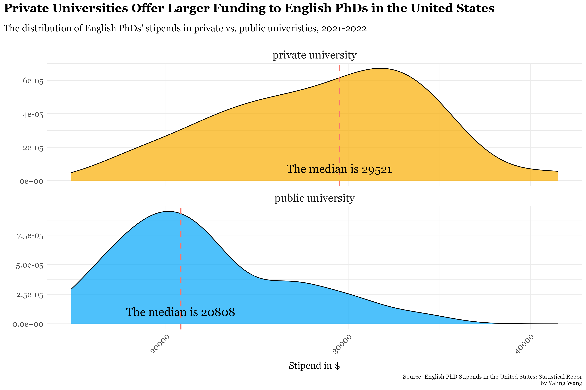

I'm Yating, a data journalist from Beijing, China. I hold a Bachelor's degree in Communication and Psychology from Boston College. Fluent in multiple programming languages and data visualization tools, I cover local news with a particular focus on health, arts, and culture through the lens of data and reporting.
Several universities recently announced a suspension of doctoral admissions in response to the halt of federal funding to research institutions by roughly $4 million.
And this is not new - the effect of underpayment first ripples outwards with students in non-science and engineering where Boston University decided to halt doctoral applications in Humanities for the 2025-2026 admission cycle after the unionized strike to raise annual salary. The English Department at the University of Chicago now only opens the admission to those with a specialized interest in media aesthetics while other tracks of interest are shut down.
Among all doctoral students, those in Humanities, Arts and Social Sciences have struggled the most for the longest time with the lowest stipend that barely sustains the cost of living.
While the stipend gap grows even bigger, the baseline of a hard-core science major was unreachable for students in Humanities in the first place. From 2015 to 2019, STEM candidates out-earned Humanities candidates by about $5000.
Median Stipend By Fields of Study Over the Years, made by Yating Wang
The pandemic imposed more difficulties, doubling the financial pressure for PhD students. Most had to deal with an inflated workload with everything turned online, and students in non-traditional science majors even saw a drop in the rate.
A PhD student’s income comes partially from teacher assistantship, but the TAship comes with much invisible pressure. Different from a professor who taught the class for several years, a doctoral student needs to familiarize themselves with the material and learn how to teach from scratch. “Everything was new, and I was a student like everyone else who’s new to the class,” said Isa Li, a doctoral recipient in Anthropology at New York University in her final year.
Li was lucky enough to receive compensation from teacher assistantship (TA) given that it is separated from the annual financial package. “But for other schools, compensation was not guaranteed if TAships were a part of the regular stipend,” she said.
Surprisingly, PhD students in Social Science, while technically qualified as STEM majors, are similarly underpaid. Even after an escalation post-covid, the rate for Social Science candidates can hardly catch up with candidates in hard-core Science majors.
Proportion of Students with Debt Within Each Major, made by Yating Wang
Almost every PhD student has to work during breaks in order to finish their dissertation in five to six years. For students who only have a 9-month financial package, they earn none during the summer.
However, Humanities scholars often lack extra funding opportunities that STEM fields tend to offer. “In a discipline in which there is no lab research and little external grant funding, the work is harder to quantify and to see,” explained Professor Weiskott.
“But so much work is happening. It has value not just to grads' career development but to the university's overall intellectual profile,” as Professor Weiskott commented.
The insecurity only aggravates towards the end of the program. The university may halt one’s stipend if one’s research exceeds seven or eight years, said Li, “but seven-year is quite common.”
The level of funding a department receives is closely tied to the financial strength of its field in the broader economy. “Majors like Chemistry benefit from substantial support from lucrative industries such as the pharmaceutical sector, whereas humanities programs rely on donations or grants from nonprofit organizations,” said Li. Technology firms are more willing to invest in STEM fields, further widening the funding gap between disciplines.
The number of PhD students slightly increased after the pandemic but with no intent to bounce back entirely. The doctoral student body was roughly 48 students per institution for each new admission cycle before 2020, and has shrunk to 40 students post-covid, surveys from the National Center for Science and Engineering Statistics (NCSES) reveals.
“Our department has unfortunately seen a decrease in applicants within the last 5-8 years,” according to the graduate advisor Hunter Morelos-Clark from the History of Arts Department at University of California, Santa Barbara. This year the department received 38 applications compared to 54 applications in 2019.
Doctoral candidates in public universities located in states with higher cost of living may face extra financial burden. In 2022, the median difference between what a private university and a public university can offer to English PhD candidates differs by almost 10 thousand.

Two histograms showing the gap between the stipend in two types of institutions, made by Yating Wang
Still, passion, instead of profit, has driven many to pursue an academic track in Humanities and Arts. Almost every PhD candidate in those fields has foreseen the financial strain before committing more than half of a decade to their academic pursuit. “Many of us knew the challenges before we applied, but we still chose this path because we love what we do,” Li said.
Numbers and statistics are more desirable than thousands of lines of text analysis when it comes to the evaluation of one’s contribution to academia. Inevitably, “a choice of discipline translates, in effect, into a choice of salary during the Ph.D.,” said Professor Weiskott.
Yet, just because they did not do their research for the money does not mean their work isn’t worth investing in. History students unearth the past, revealing patterns that could prevent today from repeating the past mistakes; English scholars untangle how language fosters communication; and Anthropology candidates decode complex social phenomena into illuminating insights. Their work enriches the way we see, think, and connect.
They deserve more, and universities can’t afford to ignore it any longer.